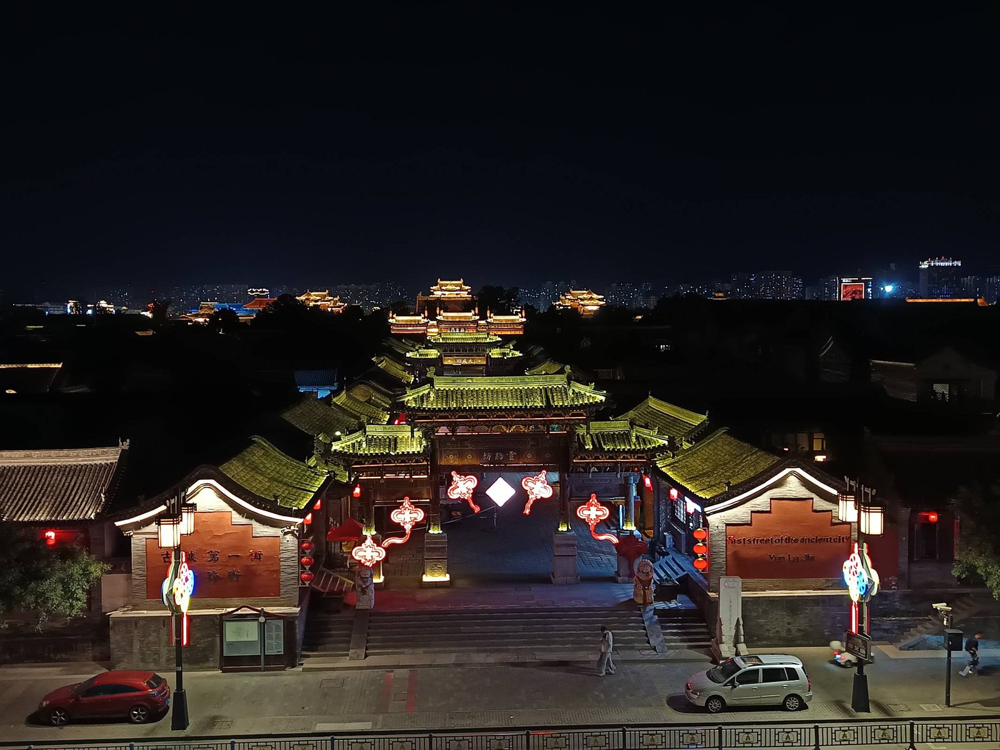
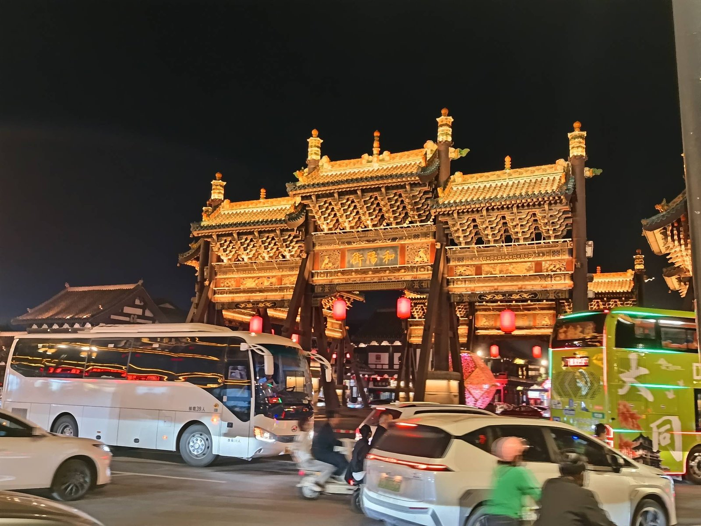
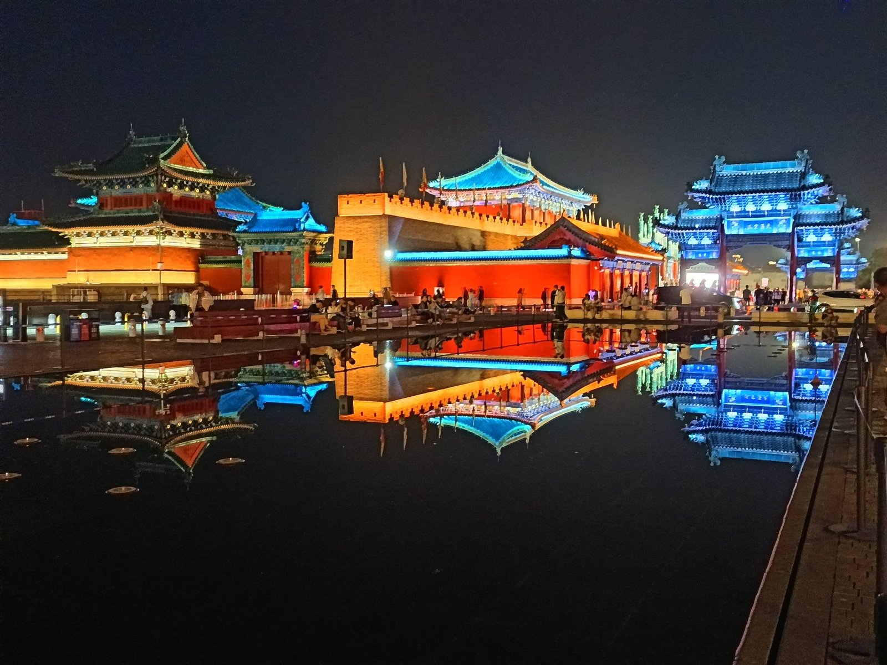
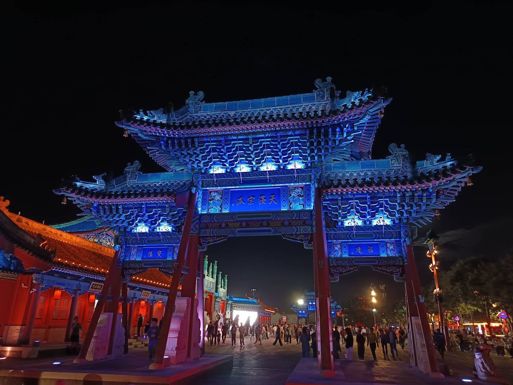

从石窟回来，天已经黑了。
白天看了一整天的佛，晚上换古城来补。
灯一亮，这座塞上的城，把自己重新讲了一遍。
沿着中轴线走，琉璃屋顶一片片亮起来——金黄的殿宇、朱红的宫墙、蓝得发亮的琉璃飞檐。
白天它是石头，晚上它是灯。

中轴线一路亮下去，像一条光的河·the night avenue
走着走着就到了和阳街的牌楼下。金碧辉煌的斗拱牌楼，底下却是一整条喧嚣的现代街——白色大巴、电动车、穿行的人群，全从这座牌楼底下过。
古和今，不是割裂的两截，是叠在一起的同一张底片。

牌楼底下，车流和人声都是新的·Heyang Street
最打动我的，是护城河上的倒影。红墙、蓝瓦、飞檐——整座古城在水里又长了一遍，清清楚楚，一丝不苟。
风一吹，倒影就碎了；风一停，它又慢慢拼回去。一个人站在岸边，看这座城在水里反复地碎、反复地拼，忽然觉得今天的自己也是这样。

风一吹就碎，风一停又拼回去·the moat
水里的城，比岸上的更完整·Daiwangfu
最后一站，是那座巨大的蓝色琉璃牌楼。白天看，它是灰扑扑的石头；到了夜里，蓝光一打，整座牌楼像从水里浮起来，透着一股不真实的蓝。
红衣的人群从它底下穿过，像一条红色的河，流过蓝色的桥。我站在远处拍了很久，没舍得走。

红衣的人流过蓝色的桥·the blue paifang
白天看佛，夜里看灯。
城在水里反复地碎、反复地拼，
而我从石窟一路走到古城，把一天走成了两篇。